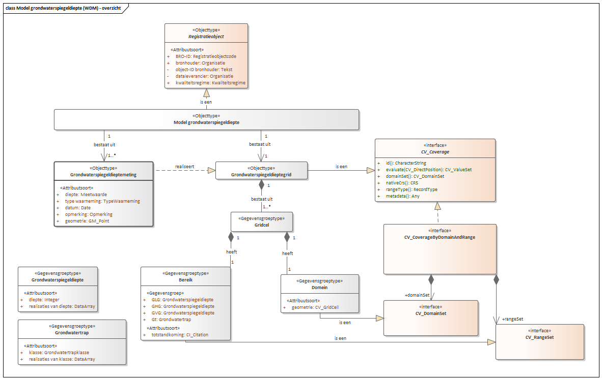
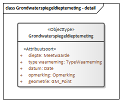
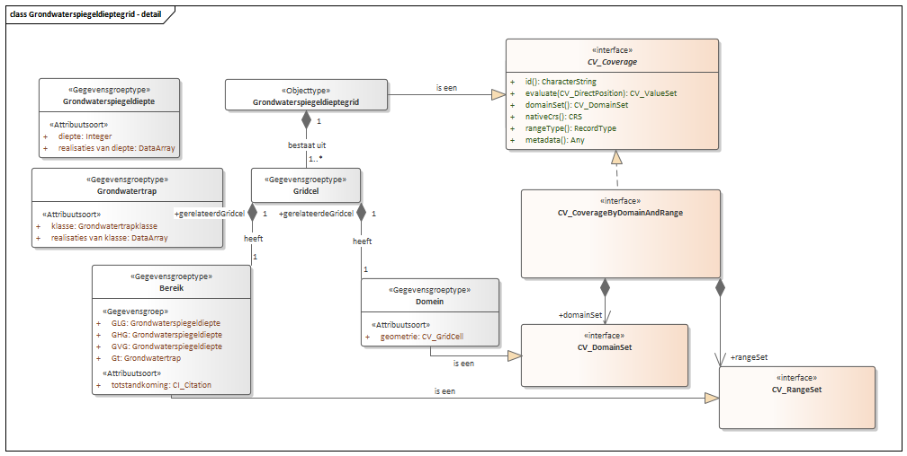
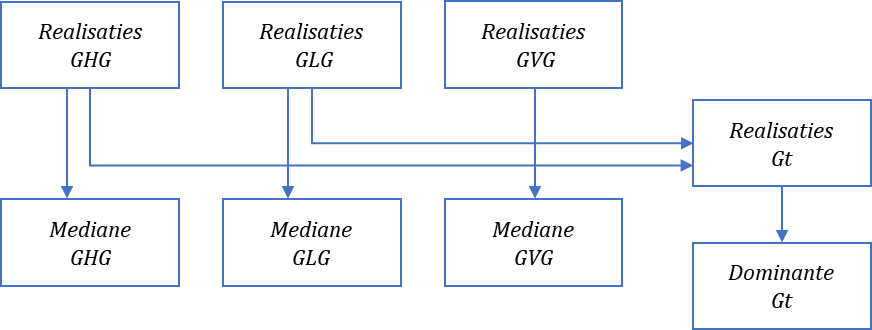
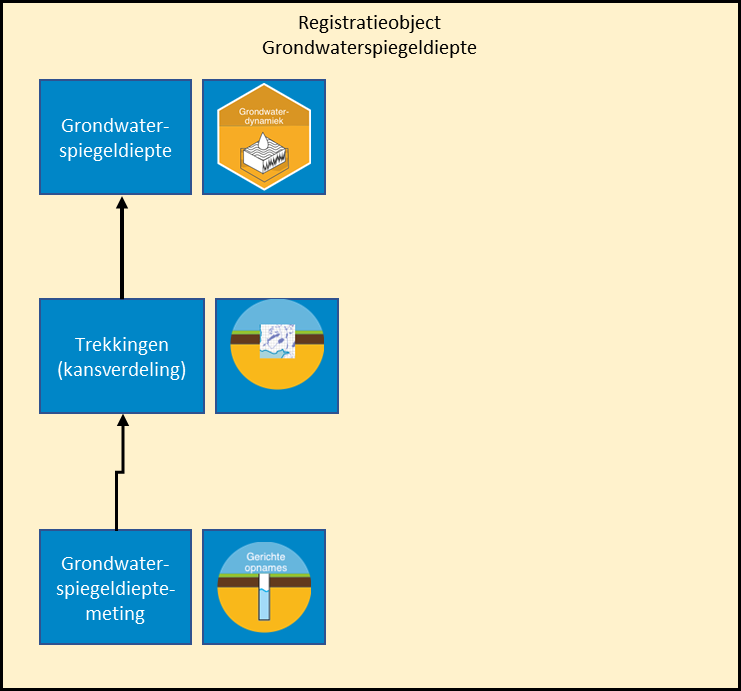
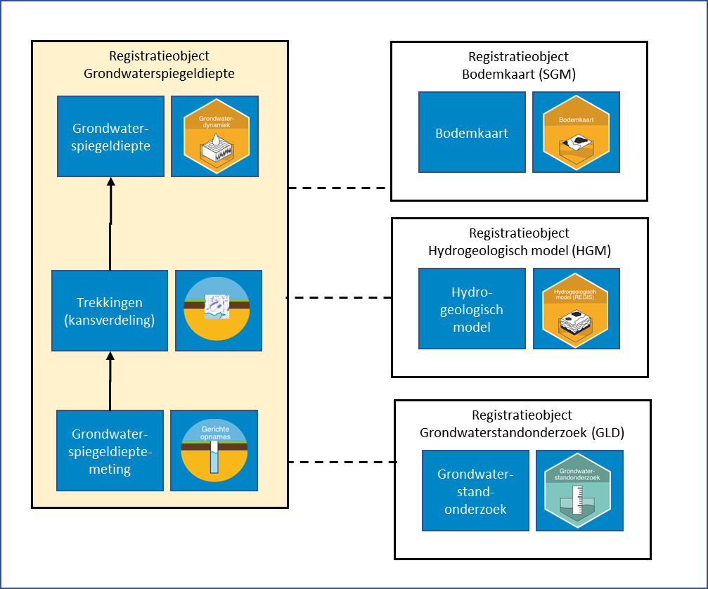

Creative Commons Attribution 4.0 International Public License (CC-BY)
Samenvatting
Dit is de werkversie voor de catalogus van registratieobject Model grondwaterspiegeldiepte.
Status van dit document
Deze paragraaf beschrijft de status van dit document ten tijde van publicatie. Het is mogelijk dat er actuelere versies van dit document bestaan. Een lijst van Geonovum publicaties en de laatste gepubliceerde versie van dit document zijn te vinden op https://www.geonovum.nl/geo-standaarden/alle-standaarden.
Dit is een definitief concept van de nieuwe versie van het informatiemodel. Wijzigingen naar aanleiding van consultaties zijn doorgevoerd.
1. Inleiding
1.1 Doel en doelgroep
In de basisregistratie ondergrond (BRO) wordt een aantal typen gegevens geregistreerd, de registratieobjecten.
Een catalogus is de gegevensdefinitie van een registratieobject en beschrijft welke gegevens van het object in de BRO zijn opgeslagen.
Het document is bedoeld voor alle gebruikers van de BRO en moet duidelijk maken welke gegevens er precies in het systeem zitten.
Aan aanleverende partijen moet het vertellen welke gegevens in de basisregistratie ondergrond moeten komen en aan welke eisen die moeten
voldoen, en aan afnemende partijen welke gegevens zij in de basisregistratie ondergrond mogen verwachten.
Het document is voor een breed publiek bedoeld en de informatie moet naast precies ook begrijpelijk zijn.
1.2 Totstandkoming
Een catalogus is het resultaat van een proces van standaardisatie dat geruime tijd in beslag kan nemen. De standaardisatie is een open proces waarin de belanghebbende partijen actief betrokken worden. Het eindresultaat wordt door de wetgever vastgesteld in een ministeriële regeling.
In bepaalde gevallen is de verscheidenheid aan gegevens van een object zo groot, dat er eerst deelverzamelingen worden gedefinieerd. Het standaardisatieproces wordt dan per deelverzameling doorlopen. De deelverzamelingen worden zo gekozen dat de gegevens die in de bijbehorende catalogus worden beschreven, direct na vaststelling aan de BRO kunnen worden aangeleverd. Wanneer er deelverzamelingen worden onderscheiden, komt de catalogus van het registratieobject dus gefaseerd tot stand. Omdat inzichten in de loop van de tijd kunnen wijzigen kan het aan het eind van het hele proces nodig blijken revisies door te voeren om ongewenste verschillen tussen deelverzamelingen weg te nemen.
1.3 Beheer
Een vastgestelde catalogus (zoals op wetten.nl gepubliceerd) wordt met het daarbij horende deel van het systeem van de basisregistratie ondergrond in gebruik genomen. De eerste formeel vastgestelde catalogus (zoals op wetten.nl gepubliceerd) krijgt het versienummer 1.0. Verwacht mag worden dat er na enige tijd behoefte gaat ontstaan aan gegevens die nog niet in de catalogus zijn opgenomen.
De beheerder hanteert drie typen versies voor een wijziging van een standaard. Bijvoorbeeld: versie 2.1.0 (=X.Y.Z):
X-wijzigingen Deze wijzigingen veranderen de structuur van de standaard. Hierdoor zijn X-wijzigingen niet backwards compatible.
Frequentie: maximaal 1 keer per 2 jaar.
Y-wijzigingen Dit zijn wijzigingen die niet de structuur veranderen. Dit kunnen bijvoorbeeld updates zijn of inhoudelijke aanpassingen aan objecten, attributen of waardelijsten of de reikwijdte van de standaard. Deze wijzigingen zijn backwards compatible.
Frequentie: maximaal 1 keer per jaar.
Z-wijzigingen Dit zijn in feite oplossingen van fouten of verbeteringen van technische aard. Deze wijzigingen zijn backwards compatible.
Frequentie: maximaal 2 keer per jaar.
In een jaar waarin een X-wijziging plaats vindt zullen er op hetzelfde registratieobject geen y-wijzigingen plaatsvinden. Als er een X- of een Y-wijziging in een jaar aan de orde is, wordt er geen z-wijziging gepland.
De versie van de catalogus met inleiding (zoals hier gepubliceerd) volgt voor de normatieve stukken volledig de versie op wetten.nl. Wijzigingen aan niet normatieve teksten in dit document vallen altijd onder Z-wijzigingen en zullen maximaal 2 keer per jaar plaatsvinden.
Deze documenten hangen samen zoals hieronder afgebeeld.
Figuur 1Samenhang tussen documentatie
1.4 Leeswijzer
Hoofdstuk 1 geeft het doel en de doelgroep van een catalogus.
Hoofdstuk 2 behandelt enkele algemene aspecten van het BRO-systeem en begrippen van algemene aard.
Hoofdstuk 3 vertelt hoe de catalogus is opgebouwd en welke aspecten van de gegevens daarin worden beschreven.
Hoofdstuk 4 en 5 beschrijft de entiteiten van het grondwaterspiegeldiepte model.
Hoofdstuk 6 geeft een toelichting op het grondwaterspiegeldiepte model.
2. Algemene kenmerken en begrippen
2.1 Opzet van de landelijke voorziening
De landelijke voorziening van de basisregistratie ondergrond is een systeem dat een schakel vormt in een informatieketen. Aan het begin van de keten staan bestuursorganen die opdracht geven tot de productie van gegevens, of zelf gegevens produceren. Die bestuursorganen worden bronhouders genoemd. De geproduceerde gegevens worden door een dataleverancier geleverd aan de beheerder van het systeem, de registerbeheerder. De bronhouder is verantwoordelijk voor de levering van gegevens. Hij kan besluiten zelf dataleverancier te zijn of andere partijen een machtiging voor levering te verlenen. De beheerder van de landelijke voorziening van de BRO registreert de aangeleverde gegevens en levert ze voor (her)gebruik door aan allerlei afnemers.
De opzet van het systeem moet begrepen worden vanuit de verantwoordelijkheden die in de keten zijn belegd. De aangeleverde gegevens vallen onder de verantwoordelijkheid van de bronhouder en de registerbeheerder mag die gegevens niet veranderen. De registerbeheerder moet echter wel gegevens toevoegen om het systeem te kunnen beheren en hij kan gegevens toevoegen om de afnemers goed van dienst te kunnen zijn.
Bij wet is geregeld dat de basisregistratie ondergrond zo wordt opgezet dat er onderscheid bestaat tussen de gegevens die aan de registerbeheerder zijn aangeleverd en de gegevens die de registerbeheerder aan de afnemers verstrekt. Het systeem valt uiteen in twee grote deelsystemen, het register brondocumenten ondergrond en de registratie
ondergrond (Figuur 2).
Een geheel van gegevens dat door of onder verantwoordelijkheid van een bronhouder wordt aangeleverd, wordt een brondocument genoemd. De brondocumenten worden in het register brondocumenten ondergrond opgeslagen. De gegevens uit de brondocumenten worden samen met de gegevens die de registerbeheerder toevoegt in de registratie ondergrond vastgelegd. De registratie ondergrond is het deelsysteem dat gebruikt wordt voor uitgifte.
Figuur 2De twee grote deelsystemen van de landelijke voorziening van de BRO.
Met deze opzet verkrijgt het systeem de nodige flexibiliteit. Zo kan een object in de registratie ondergrond gegevens bevatten die uit meer dan één brondocument afkomstig zijn en bij uitgifte kunnen gegevens van verschillende objecten met elkaar gecombineerd worden. Ook is het mogelijk met het brondocument gegevens op te slaan die alleen voor de bronhouder en de aanleverende partij van belang zijn.
De catalogus dekt alle gegevens die opgenomen zijn in de registratie ondergrond. Verreweg de meeste gegevens komen uit de brondocumenten die de dataleverancier aanlevert en een paar gegevens komen voort uit de overdracht van een brondocument aan de registerbeheerder. Aan de aangeleverde gegevens worden enkele gegevens door de registerbeheerder toegevoegd. Als een gegeven is toegevoegd door de BRO wordt dat in de beschrijving expliciet vermeld.
Alle gegevens in de registratie ondergrond worden uitgegeven, maar niet alle afnemers kunnen alle gegevens geleverd krijgen. De gegevens die niet aan alle afnemers worden uitgeleverd zijn de gegevens die alleen nodig zijn in de communicatie tussen de registerbeheerder enerzijds en de dataleveranciers en bronhouders anderzijds.
2.2 Registratieobject
Het registratieobject is dé eenheid in de data-architectuur van de basisregistratie ondergrond. Voor de registerbeheerder is het de elementaire bouwsteen van het systeem dat hij moet beheren.
Een registratieobject verwijst naar een eenheid van informatie die onder de verantwoordelijkheid van één bronhouder valt en die met een bepaald doel is of wordt gemaakt. Het is in directe of indirecte zin gedefinieerd in de ruimte en dat wil zeggen dat een registratieobject een plaats op het aardoppervlak heeft of dat het gekoppeld is aan een ander type registratieobject met een plaats op het aardoppervlak.
Een registratieobject is niet alleen in de ruimte maar ook in de tijd gedefinieerd. Het leven van een registratieobject begint op het moment dat de gegevens zijn geregistreerd en dat is zo kort mogelijk nadat de gegevens zijn geproduceerd. De levensduur van een registratieobject, en de veranderlijkheid van de gegevens verschilt van object tot object. Een grondwatermonitoringput kan tientallen jaren gebruikt worden voor het meten van grondwaterstanden en in de periode kunnen er nieuwe gegevens ontstaan. Dat betekent dat de gegevens van de put in de registratie ondergrond gedurende zijn hele levensduur bijgewerkt moeten kunnen worden. Aan de andere kant van het spectrum staan de objecten waarvan alle gegevens in een keer worden vastgelegd. Geotechnisch sondeeronderzoek is daar een voorbeeld van. Sondeeronderzoek is eenmalig onderzoek en het resultaat ervan kan al na een of enkele dagen aan de bronhouder worden overhandigd.
2.3 Registratiedomein
Registratieobjecten worden in de basisregistratie ondergrond gegroepeerd in domeinen. Vooralsnog worden zes domeinen onderscheiden:
bodem- en grondonderzoek
bodemkwaliteit
grondwatermonitoring
grondwatergebruik
mijnbouwwet
modellen.
De domeinen zijn vanuit het oogpunt van beheer van belang voor de ordening van het systeem. Daarnaast zijn zij nuttig in de communicatie met de partijen die bij de realisatie van het systeem betrokken zijn.
2.4 Kwaliteitsregime
In de basisregistratie ondergrond worden niet alleen gegevens geregistreerd die dateren van na de datum waarop de wet van kracht is geworden. Ook oudere gegevens zullen in de basisregistratie ondergrond worden opgenomen. De noodzaak daartoe ligt in de wet verankerd. Die schrijft voor dat de gegevens uit de eerder bestaande systemen DINO en BIS zo veel mogelijk naar de BRO moeten worden overgezet. Verder staat de wet toe dat bronhouders tot vijf jaar na de inwerkingtreding van de wet historische gegevens ter registratie mogen aanbieden.
Historische gegevens kunnen niet altijd voldoen aan de strikte regels die de BRO stelt. Zo kan het voorkomen dat voor gegevens die volgens de strikte regels van de BRO verplicht zijn, geen waarde bekend is. Om de verwerking van de twee categorieën gegevens naast elkaar mogelijk te maken, worden twee kwaliteitsregimes gehanteerd. Voor de aanlevering van gegevens volgens de strikte regels geldt het IMBRO-regime. Bij de aanlevering van historische gegevens wordt geaccepteerd dat een aantal formeel verplichte gegevens geen waarde heeft. Voor deze gegevens wordt het IMBRO/A-regime gehanteerd en dat kent dus minder strikte regels.
De introductie van de twee kwaliteitsregimes geeft de bronhouder gedurende een bepaalde periode een zekere mate van vrijheid. Het kan bijvoorbeeld praktisch blijken het IMBRO/A-regime te hanteren voor gegevens die weliswaar pas na de datum waarop de wet in werking is getreden zijn geproduceerd maar die voortkomen uit opdrachten die al voor die datum zijn gegeven. Ook kan het voorkomen dat historische gegevens wel aan alle strikte voorwaarden voldoen en dan is het wenselijk de gegevens onder IMBRO-regime aan te leveren.
De periode waarin de bronhouders die vrijheid hebben wordt de transitieperiode genoemd. Over de duur van de transitieperiode zijn nog geen afspraken gemaakt. Na afloop van de transitieperiode kan alleen onder het strikte IMBRO-regime worden aangeleverd.
2.5 Formele en materiële geschiedenis
De basisregistratie ondergrond maakt deel uit van een stelsel van basisregistraties. Binnen het stelsel maakt men onderscheid tussen de materiële geschiedenis en de formele geschiedenis van een object.
Het begrip materiële geschiedenis wordt gebruikt om de veranderingen van eigenschappen van een object in de werkelijkheid aan te duiden. De materiële geschiedenis van een object wordt, voor zover relevant, in de registratie ondergrond vastgelegd. Niet alle registratieobjecten hebben een materiële geschiedenis, alleen de objecten met een levensduur, zoals de grondwatermonitoringput.
Het begrip formele geschiedenis wordt gebruikt voor de veranderingen van eigenschappen van een object in de registratie zelf. De meeste van die veranderingen gaan terug op een verandering van eigenschappen in de werkelijkheid, en de formele geschiedenis geeft aan wanneer de veranderingen in het systeem geregistreerd zijn. De formele geschiedenis kent ook gebeurtenissen die niet het gevolg zijn van een verandering in de werkelijke eigenschappen van een object. Die gebeurtenissen hebben betrekking op correcties. Het kan gebeuren dat een bronhouder erachter komt dat er een onjuiste waarde was geregistreerd en dan zorgt hij ervoor dat die verbeterd wordt. De registratie van de verbetering is een formele gebeurtenis.
Alle registratieobjecten hebben een formele geschiedenis en die wordt in de registratie ondergrond globaal vastgelegd in de registratiegeschiedenis van het object. Globaal wil zeggen dat de registratie ondergrond alleen een overzicht van de formele geschiedenis geeft. Voor de details moet het register brondocumenten ondergrond worden geraadpleegd.
Bij correctie wordt het betreffende gegeven in de registratie ondergrond overschreven en is de oude waarde van het gegeven niet meer direct beschikbaar voor de afnemers.
Zou een afnemer toch willen weten wat de eerdere foute waarde was, dan moet hij het register brondocumenten ondergrond raadplegen.
2.6 Coördinaten en referentiestelsels
De registratieobjecten van de basisregistratie ondergrond zijn gedefinieerd in de ruimte en dat wil zeggen dat een object zelf een plaats op het aardoppervlak, een locatie, heeft, of dat het gekoppeld is aan een ander type registratieobject met een locatie. Afhankelijk van het type registratieobject, wordt de locatie geregistreerd als een punt, een lijn of een vlak.
De locatie is de horizontale positie van een object. Voor bepaalde objecten is het voldoende dat alleen die horizontale positie wordt vastgelegd, maar voor veel objecten is ook de verticale positie van belang.
Posities worden vastgelegd in coördinaten en die zijn gedefinieerd in een bepaald referentiestelsel.
Er zijn verschillende typen referentiestelsels. Zo spreekt men van horizontale referentiestelsels (2D), verticale referentiestelsels (1D), gecombineerde referentiestelsels (2D, 1D) en werkelijke 3D referentiestelsels. In Nederland worden de horizontale en de verticale component van een positie in een afzonderlijk stelsel uitgedrukt. Het is vandaag de dag mogelijk met gps een positie in een 3D-referentiestelsel vast te leggen, maar de wens over te stappen op het gebruik van 3D is nog door geen van de partijen die betrokken zijn bij de basisregistratie ondergrond naar voren gebracht.
2.6.1 Referentiestelsels voor de horizontale positie
In Nederland zijn traditioneel verschillende referentiestelsels voor de horizontale positie in gebruik. In 2009, bij de eerste voorbereidingen voor de totstandkoming van de basisregistratie ondergrond, is al vastgesteld dat de verscheidenheid aan referentiestelsels de basisregistratie ondergrond voor problemen stelt omdat de registratie dan niet gemakkelijk op een eenduidige manier bevraagd kan worden. In de registratie ondergrond worden namelijk zowel gegevens met een locatie op land als gegevens met een locatie op zee geregistreerd. In de toenmalige praktijk werden op land en op zee verschillende stelsels gebruikt. Op land werd RD gebruikt en op zee waren verschillende stelsels in gebruik, waarvan WGS84 de belangrijkste was.
In 2009 was ook al bekend dat de Europese kaderrichtlijn INSPIRE de lidstaten vraagt de gegevens in Europa in één referentiestelsel uit te gaan wisselen, te weten in ETRS89. Met dat in gedachten, is het besluit genomen het BRO-systeem zo in te richten dat de registratie bevraagd gaat worden in ETRS89.
Het besluit wordt ondersteund door ontwikkelingen in Nederland. Sinds 2013 wordt er door de drie belangrijkste autoriteiten in Nederland op het gebied van referentiestelsels, het Kadaster, de Dienst der Hydrografie en Rijkswaterstaat, gewerkt aan de totstandkoming van nieuwe afspraken. Die afspraken moeten in lijn zijn met Europese afspraken en leiden tot heldere en eenduidige transformatieprocedures tussen referentiestelsels. Concreet betekent dit dat in Nederland op termijn het ETRS89-stelsel als standaard zal worden gehanteerd voor het uitwisselen van geo-informatie.
Het besluit betekent niet dat de gegevens ook in ETRS89 aangeleverd moeten worden. De basisregistratie ondergrond voorziet een periode van transitie waarin de aanleverende partijen zelf bepalen wanneer zij overstappen op ETRS89. Die periode zal naar verwachting jaren duren. Om de transitie te ondersteunen hanteert de basisregistratie ondergrond de volgende spelregels:
Gegevens mogen in een beperkt aantal referentiestelsels worden aangeleverd (RD, WGS84 en ETRS89).
Voor locaties op land wordt alleen RD of ETRS89 toegestaan.
Voor locaties op zee wordt alleen WGS84 of ETRS89 toegestaan.
De aangeleverde coördinaten worden in de registratie opgeslagen.
De aangeleverde coördinaten worden door de basisregistratie ondergrond getransformeerd naar
het ETRS89 referentiestelsel.
De getransformeerde coördinaten worden naast de aangeleverde coördinaten opgeslagen.
Bij de getransformeerde coördinaten wordt ook een identificatie van de gebruikte transformatiemethode opgeslagen.
Als de coördinaten in ETRS89 zijn aangeleverd, dan staat bij aangeleverde en getransformeerde positie dezelfde
informatie. Voor de locatie worden de getransformeerde coördinaten en de aangeleverde coördinaten beide
aan de afnemers verstrekt.
2.6.2 Referentiestelsels voor de verticale positie
In Nederland zijn voor verticale posities op land en zee verschillende referentiestelsels in gebruik. Op land wordt NAP gebruikt. Op zee is het in de voor de BRO relevante werkvelden gebruikelijk posities uit te drukken t.o.v. het gemiddeld zeeniveau (MSL, Mean Sea Level), maar posities t.o.v. LAT komen ook voor (Lowest Astronomical Tide). Dit laatstgenoemde stelsel wordt in de kaderrichtlijn INSPIRE genoemd als het stelsel van voorkeur voor het uitdrukken van verticale posities op zee. De basisregistratie ondergrond staat daarom op zee het gebruik van LAT naast MSL toe. Aangeleverde verticale posities worden door de BRO niet getransformeerd.
2.7 Gegevens op land en op zee
De basisregistratie ondergrond bevat gegevens over de ondergrond van Nederland en zijn zgn. Exclusieve Economische Zone (EEZ). De EEZ is het gebied op de Noordzee waar Nederland economische rechten heeft. Voor de referentiestelsels die bij aanlevering worden toegestaan, is het van belang te weten of de locatie van een object op zee of op land ligt.
Als scheidingslijn tussen land en zee wordt in de basisregistratie ondergrond de UNCLOS-basislijn gehanteerd. Het beheer van de basislijn valt onder de verantwoordelijkheid van de Dienst der Hydrografie van het ministerie van Defensie. Deze dienst voert die taak uit op basis van het Zeerechtverdrag van de Verenigde Naties uit 1982, dat in het Engels de United Nations Convention on the Law of the Sea (UNCLOS) heet.
De basislijn is opgebouwd uit de nulmeterdieptelijn zoals weergegeven op de zeekaarten en enkele rechte basislijnen die onder meer de monding van de Westerschelde en de wateren tussen de Waddeneilanden afsluiten.
De grens tussen land en zee is veranderlijk. De Dienst der Hydrografie stelt de grens opnieuw vast wanneer daartoe voldoende aanleiding is. De BRO hanteert bij inname de meest recente versie van de UNCLOS-basislijn en controleert daarmee of de juiste referentiestelsels gebruikt worden.
Tussen het moment waarop de locatie van een object wordt bepaald en het moment waarop het gegeven in de basisregistratie ondergrond wordt vastgelegd verloopt enige tijd. In die periode kan de positie van de UNCLOS-basislijn opnieuw zijn vastgesteld, en dan ontstaat er een discrepantie die bij het aanleveren van gegevens tot problemen kan leiden. Wanneer een dergelijk probleem zich voordoet, wordt de dataleverancier gevraagd contact op te nemen met de registratiebeheerder om gezamenlijk tot een oplossing te komen.
Een soortgelijk probleem doet zich voor met betrekking tot de begrenzing van Nederland, met name van het Nederlands territoir. De grenzen van Nederland worden ieder jaar op 1 januari vastgesteld door het Kadaster en vastgelegd in de basisregistratie kadaster. De BRO controleert bij inname of een object in het gebied ligt dat Nederland en zijn Exclusieve Economische Zone omvat, en hanteert daarbij de actuele grenzen. Ook bij problemen die te herleiden zijn tot een verandering in de begrenzing van Nederland, wordt de dataleverancier gevraagd contact op te nemen met de registratiebeheerder om gezamenlijk tot een oplossing te komen.
Binnen het domein Mijnbouwwet wordt de scheidingslijn tussen land en zee niet bepaald door de UNCLOS-basislijn, maar door een over zee lopende lijn die is vastgelegd in een bijlage bij de Mijnbouwwet. In de registratie ondergrond wordt deze lijn aangeduid als mijnbouwgrens. Voor de referentiestelsels die bij aanlevering worden toegestaan, is het binnen het domein Mijnbouwwet van belang te weten of de locatie van een object aan landzijde of aan zeezijde van de mijnbouwgrens ligt. Waar in voorgaande paragrafen ‘op land’ en ‘op zee’ is genoemd, houdt dat binnen het domein Mijnbouwwet in: aan landzijde respectievelijk aan zeezijde van de mijnbouwgrens.
2.8 Nauwkeurigheid van meetwaarden
Voor zinvol gebruik van gegevens met een gemeten, berekende of anderszins bepaalde waarde is het noodzakelijk dat de nauwkeurigheid van die gegevens bekend is.
Het begrip nauwkeurigheid laat zich in deze context het best omschrijven als de juistheid van een gemeten of berekende waarde. In de meeste processen waarin de waarde van een gegeven wordt bepaald, kan de afwijking van de daadwerkelijke waarde slechts via een kalibratie- of statistisch proces worden verkregen. Het resultaat omvat dan niet alleen een van de mogelijke realisaties van een meetwaarde maar ook informatie over de mogelijke spreiding van de meetwaarden.
De basisregistratie ondergrond gaat ervan uit dat de producenten van gegevens de metingen en berekeningen uitvoeren binnen een stelsel van afspraken dat binnen het desbetreffende werkveld is vastgelegd. Uitgangspunt is dat ook de eisen waaraan de gegevens op het gebied van nauwkeurigheid moeten voldoen in afspraken zijn vastgelegd. Dat kunnen praktische werkafspraken zijn, maar ook afspraken die vertaald zijn naar ISO- en NEN-normen. In de catalogus wordt in beginsel verwezen naar die normen. Waar deze normen niet voorzien in afspraken over de nauwkeurigheid, stelt de basisregistratie ondergrond hieraan specifieke eisen. Deze zijn dan vermeld in de catalogus.
2.9 Authentiek gegeven
In de wet is een aantal gegevens expliciet als authentiek aangeduid. Dit wordt in de catalogus nader uitgewerkt; verreweg de meeste gegevens zijn authentiek.
Met de aanduiding authentiek wordt, zoals geformuleerd in de memorie van toelichting op de wet, tot uitdrukking gebracht dat:
Het gegeven in samenhang met andere gegevens door een groot aantal bestuursorganen in verschillende processen wordt gebruikt en derhalve bestemd is voor informatie-uitwisseling tussen bestuursorganen;
de verantwoordelijkheid voor betrouwbaarheid van het gegeven eenduidig geregeld is;
het gegeven onderworpen is aan intern en extern kwaliteitsonderzoek, en
het gegeven zich leent voor verplicht gebruik door bestuursorganen en eenmalige verstrekking door burgers en bedrijven aan de overheid.
In de praktijk mag een gebruiker van de gegevens ervan uitgaan dat alle gegevens correct zijn. De catalogus moet de gebruiker alle informatie geven die voor een goed begrip daarvan nodig is.
Heeft een gebruiker echter gerede twijfel over de juistheid van een authentiek gegeven dan wordt verwacht dat hij de registerbeheerder daarvan op de hoogte brengt. Bestuursorganen zijn, bij gerede twijfel over de juistheid van een authentiek gegeven (of het ontbreken ervan), zelfs verplicht daarvan melding te maken.
Voor alle gegevens is aangegeven of ze authentiek zijn. Ook is voor alle gegevens aangegeven of ze aanwezig moeten zijn en een waarde moeten hebben. Dat laat zien dat er gegevens kunnen zijn die authentiek zijn maar geen waarde hoeven te hebben. Juist omdat er verplichtingen gelden t.a.v. authentieke gegevens, vraagt dit om een korte toelichting.
Wanneer een authentiek gegeven geen waarde heeft moet de gebruiker ervan uitgaan dat het gegeven niet is geproduceerd. Dat geval kan zich uiteraard alleen voordoen wanneer er vrijheid van beslissen bestaat bij de bronhouder of de producent.
Voor de duidelijkheid, als er wel een waarde is dan moet die ook in de BRO worden opgenomen. Bij gerede twijfel over het ontbreken van een waarde, moet een bestuursorgaan dat melden.
3. De inhoud van de catalogus
De gegevensdefinitie
De gegevensdefinitie vormt het hart van de catalogus en geeft een beschrijving van alle gegevens van het registratieobject. Eerst wordt de definitie van het registratieobject gegeven inclusief de plaatjes van het zgn. domeinmodel, en vervolgens de definities van de entiteiten waaruit het object is opgebouwd met de eigenschappen van die entiteiten, de attributen. De entiteiten worden op volgorde van de nummers in het domeinmodel behandeld. De volgende aspecten van de gegevens worden vastgelegd:
De Nederlandse naam van het gegeven.
Of het gegeven van het type entiteit of het type attribuut is, met in het laatste geval van welke entiteit het een attribuut is.
Eventueel de herkomst van het gegeven, in het uitzonderlijke geval de herkomst anders is dan de BRO.
De definitie van het gegeven.
Eventueel de herkomst van de definitie, in het uitzonderlijke geval de definitie een andere herkomst heeft dan de BRO.
De kardinaliteit van een attribuut, en dat geeft aan hoe vaak het attribuut voorkomt.noot
De aanduiding of een attribuut al dan niet authentiek is (juridische status).
De naam van het domein voor de waarden van het attribuut, met afhankelijk van het type domein nadere informatie over de waarden.
Eventueel de naam van het domein van het attribuut voor IMBRO/A, wanneer het uitzonderlijke geval zich voordoet dat er voor IMBRO/A een ander domein geldt dan voor IMBRO.
Eventueel de regels die in aanvulling op de kardinaliteit en de bepalingen van het domein gelden en door de basisregistratie ondergrond in controles zijn opgenomen, bijvoorbeeld om de consistentie van de inhoud van een brondocument vast te stellen.
Eventueel de regels die voor IMBRO/A gelden, wanneer het uitzonderlijke geval zich voordoet dat er voor IMBRO/A aanvullende regels gelden.
Eventueel de aanduiding dat de waarde van het attribuut mag ontbreken, wanneer het uitzonderlijke geval zich voordoet dat de waarde van het attribuut mag ontbreken.
Van attributen waarvan de waarde mag ontbreken de omschrijving van de reden waarom de waarde mag ontbreken.
Eventueel de aanduiding dat het gegeven wordt afgeleid door de basisregistratie ondergrond, in het uitzonderlijke geval het gegeven wordt afgeleid.
Eventueel een toelichting om aanvullende informatie te geven over de betekenis van het gegeven of de reden waarom het is opgenomen.
Van attributen van objecten met een materiële geschiedenis de aanduiding of het attribuut al dan niet een materiële geschiedenis kan hebben.
De gegevensdefinitie dekt de beide kwaliteitsregimes die worden onderscheiden, IMBRO en IMBRO/A. Het kwaliteitsregime IMBRO is leidend en bij het opstellen van de gegevensdefinitie is geprobeerd de verschillen tussen de twee regimes zo klein te houden. Het streven is een object altijd in termen van dezelfde gegevens te beschrijven en voor IMBRO/A alleen aanvullende regels te formuleren en extra waarden toe te staan. Bij uitzondering kan het echter nodig zijn gebleken voor IMBRO/A aparte entiteiten, attributen of domeinen te definiëren.
Noot
3.1 Domeinen
Een domein beschrijft welke waarden een attribuut mag hebben. Domeinen zijn van een bepaald type en de typen die in de catalogus worden gebruikt worden hieronder toegelicht. Sommige domeinen zijn samengesteld en die worden als laatste besproken.
3.1.1 Aantal
Het domein Aantal wordt gebruikt voor een telbare hoeveelheid. Het is een natuurlijk getal met een bepaalde maximale lengte.
Het domein wordt volledig gespecificeerd door met de aanduiding aantal ook de maximale lengte mee te (Aantal N). Gewoonlijk wordt de waardeverzameling verder ingeperkt door een bereik te specificeren. In het domeinmodel wordt volstaan met de algemene aanduiding Aantal.
3.1.2 Code
Een code is een opeenvolging van cijfers, van letters of van cijfers en letters met een bepaalde opbouw en met een specifieke betekenis. Een code heeft gewoonlijk een betekenis die ook buiten de basisregistratie ondergrond geldt. Een code wordt uitgegeven door een verantwoordelijke instantie. Om de opbouw van een code weer te geven wordt gebruik gemaakt van de letters C en N. De letter C staat voor character (Eng.) en duidt een letter aan, de letter N staat voor number (Eng.) en duidt een cijfer aan. Een code heeft een bepaalde naam.
Het domein wordt volledig gespecificeerd door met de naam van de code ook de opbouw mee te geven. Uit de definitie van het attribuut zelf moet blijken wat de specifieke betekenis is van de code. In het domeinmodel wordt het domein aangeduid met zijn naam.
3.1.3 Tijdstip
Voor gegevens die over tijdstippen gaan worden twee domeinen gebruikt. Een voor een tijdstip tot op de seconde nauwkeurig (DatumTijd) en een voor een tijdstip tot op de dag nauwkeurig (Datum).
In ieder domein gaat het om de datum gemeten volgens de Gregoriaanse kalender. Bij het domein DatumTijd wordt de tijd gemeten volgens UTC en moet de tijdzone worden meegegeven. UTC is de mondiaal geaccepteerde standaardtijd en de opvolger van GMT (Greenwich Mean Time); de drie letters staan voor Coordinated Universal Time. Door de tijdzone mee te geven kan lokale tijd worden omgezet naar UTC.
De opbouw van de twee domeinen volgt dezelfde conventies, conform ISO 8601. Het eerste element in de opbouw staat voor het jaar, dan volgt de maand, enz., en het laatste element staat voor de tijdzone. Om de verschillende elementen aan te geven worden letters gebruikt: jaar (J), maand (M), dag (D), uur (U), minuut (M)en seconde (S), gevolgd door de tijdzone. Het aantal letters geeft de lengte aan.
Voor de meest uitgebreide variant van de opbouw, die van DatumTijd, wordt dit JJJJ-MM-DDTUU:MM:SS+UU:MM. De T is het teken dat de datum en het tijdstip op die datum scheidt. De + is het scheidingteken tussen het tijdstip en de tijdzone. Zoals uit de opbouw blijkt wordt de tijdzone in uren en minuten gegeven. De meeste tijdzones zijn overigens uitgedrukt in gehele uren (UU:00). In Nederland geldt Centraal Europese Tijd (UTC+1:00) of Centraal Europese Zomertijd (UTC+2.00).
3.1.3.1 Datum
Het domein Datum wordt gebruikt om een datum volgens de Gregoriaanse kalender tot op de dag nauwkeurig aan te geven. De opbouw is JJJJ-MM-DD.
Bij het domein Datum is het voldoende de naam te geven, omdat de opbouw altijd hetzelfde is. Gewoonlijk wordt de waardeverzameling verder ingeperkt door een bereik te specificeren.
3.1.3.2 DatumTijd
Het domein DatumTijd wordt gebruikt om een tijdstip volgens de Gregoriaanse kalender tot op de seconde nauwkeurig aan te geven. De opbouw is JJJJ-MM-DDTUU:MM:SS+UU:MM.
Bij het domein DatumTijd is het voldoende de naam te geven, omdat de opbouw altijd hetzelfde is. Gewoonlijk wordt de waardeverzameling verder ingeperkt door een bereik te specificeren.
3.1.3.3 OnvolledigeDatum
Voor gegevens die onder het kwaliteitsregime IMBRO/A aangeleverd worden, geldt een derde domein met vier keuzemogelijkheden.
De datum tot op de dag nauwkeurig, met als opbouw JJJJ-MM-DD
De datum tot op de maand nauwkeurig, met als opbouw JJJJ-MM
De datum tot op het jaar nauwkeurig, met als opbouw JJJJ
Geen datum bekend, met als vaste waarde onbekend.
De keuze die gemaakt wordt is gebaseerd op de beschikbaarheid van gegevens. De gebruiker moet ervan uit gaan dat de informatie zo nauwkeurig mogelijk is opgenomen. Bij het domein OnvolledigeDatum is het voldoende de naam te geven, omdat de vier keuzen en de opbouw altijd hetzelfde zijn.
3.1.4 Meetwaarde
Het domein Meetwaarde is van het type getal en wordt in de basisregistratie ondergrond gebruikt voor gegevens die gemeten of berekend zijn. Bij het getal hoort een eenheid. De basisregistratie ondergrond gebruikt voor de eenheden de codes uit het UCUM (Unified Code for Units of Measure)-systeem. In bijzondere gevallen is de eenheid dimensieloos.
Het getal is altijd een rationaal getal, een getal met een decimaal scheidingsteken. Door het scheidingteken krijgt het een opbouw. Het aantal cijfers voor het scheidingsteken is variabel maar begrensd. Het aantal cijfers achter het scheidingsteken ligt vast.
Gewoonlijk wordt niet alleen de opbouw van het getal benoemd, maar wordt de waardeverzameling verder ingeperkt door een bereik te specificeren. Het bereik geeft de minimale en de maximale waarde aan die een attribuut kan hebben.
Wanneer een attribuut het domein Meetwaarde heeft wordt de opbouw, de eenheid en indien van toepassing het bereik gegeven. De opbouw wordt aangeduid als N.N. N staat voor het maximum aantal cijfers voor, resp. het aantal cijfers achter het scheidingsteken.
Inname van meetwaarden
In de praktijk is het moeilijk een meetwaarde zonder verandering van het ene systeem aan het andere door te geven. De basisregistratie ondergrond hanteert de definities binnen het systeem en bij uitgifte strikt om te borgen dat een meetwaarde zonder verandering kan worden doorgegeven.
Bij het vastleggen van eigenschappen is het niet altijd nodig getallen zo strikt te definiëren als de basisregistratie vraagt. De uitvoerders weten wel wat een getal zou moeten voorstellen en kunnen bijvoorbeeld accepteren dat een meetwaarde er een decimale nul bij krijgt of dat een getal een onbepaald aantal decimalen heeft. Om de uitvoeringspraktijk niet nodeloos te frustreren door getallen die niet aan de strikte definitie te voldoen af te wijzen, hanteert de basisregistratie ondergrond bij het innemen van meetwaarden de volgende praktische regels:
Er zijn meer cijfers achter het scheidingsteken aanwezig dan gespecificeerd: het getal wordt afgekapt op het aantal dat in de gegevensdefinitie is gespecificeerd.
Er zijn minder cijfers achter het scheidingsteken aanwezig dan gespecificeerd: het getal wordt aangevuld met nullen tot het aantal dat in de gegevensdefinitie is gespecificeerd.
Er is geen scheidingsteken aanwezig: het scheidingsteken wordt toegevoegd en het getal wordt aangevuld met nullen tot het aantal dat in de gegevensdefinitie is gespecificeerd.
Het getal voor het scheidingsteken begint met een of meer nullen: de nullen worden genegeerd.
Er zijn meer cijfers vóór het scheidingsteken aanwezig dan gespecificeerd: de waarde wordt geweigerd.
3.1.5 Tekst
Het domein Tekst bestaat uit een stuk tekst van een bepaalde maximale lengte. De tekst mag alleen bestaan uit de tekens die voorkomen in de MES-1 set. De MES-1 set omvat 335 tekens en wordt gebruikt binnen de landen van de Europese Unie die een Latijns schrift kennen.
Het domein wordt volledig gespecificeerd door met de aanduiding tekst ook de maximale lengte mee te (Tekst N). In het domeinmodel wordt volstaan met de algemene aanduiding Tekst.
3.1.6 Waardelijst niet-uitbreidbaar
Een niet-uitbreidbare waardelijst wordt gebruikt wanneer uitbreiding niet mogelijk is. Alle waarden van de lijst staan vast.
Bij een niet-uitbreidbare waardelijst is het voldoende de naam te geven, omdat de inhoud altijd hetzelfde is. In de basisregistratie ondergrond worden drie niet-uitbreidbare waardelijsten gebruikt.
IndicatieJaNee
Waarde
ja
nee
IndicatieJaNeeOnbekend
Waarde
ja
nee
onbekend
Kwaliteitsregime
Waarde
IMBRO
IMBRO/A
3.1.7 Waardelijst uitbreidbaar
Een uitbreidbare waardelijst wordt gebruikt wanneer uitbreiding mogelijk moet zijn. Iedere waarde van de lijst heeft een specifieke betekenis (omschrijving) en geldt voor een bepaald kwaliteitsregime, IMBRO en/of IMBRO/A. Eventueel worden andere aspecten van de waarde vastgelegd.
Bij een uitbreidbare waardelijst wordt de naam van de lijst geven. De inhoud van de lijst is in een apart hoofdstuk van de gegevensdefinitie opgenomen.
3.1.8 Organisatie
Het domein Organisatie wordt gebruikt om de organisaties die een rol hebben in de basisregistratie ondergrond te identificeren. De invulling van het domein hangt af van waar de organisatie gevestigd is en voor de basisregistratie ondergrond gaat het daarbij om Nederland of een andere lidstaat van de Europese Unie.
In het geval de organisatie in Nederland gevestigd is, wordt het domein ingevuld met het gegeven dat een onderneming of de maatschappelijke activiteit van een rechtspersoon in het Handelsregister identificeert, het KvK-nummer. Het KvK-nummer is van het type code en de opbouw is NNNNNNNN.
Voor organisaties buiten Nederland wordt het domein ingevuld met het equivalent van het KvK-nummer in een handelsregister van een andere lidstaat van de Europese Unie dan Nederland, het EuropeesHandelsnummer. Het Europees handelsnummer, de zogenaamde EUID, is geïntroduceerd ten behoeve van de koppeling van handelsregisters. De code is gebaseerd op ISO 6523 en is opgebouwd uit een landcode, registeridentificatiecode, inschrijvingsnummer en controlegetal. De landcode is de 2-letterige code van ISO3166, de registeridentificatiecode is de identificatie van het nationale register omdat in sommige landen meerdere handelsregisters bestaan en het inschrijvingsnummer is het nummer waaronder de onderneming is ingeschreven in het betreffende register. Het controlegetal ter voorkomen van identificatiefouten wordt nog niet gebruikt. De opbouw per element is variabel en daarom is het Europees Handelsnummer in de BRO als domein Tekst 40 opgenomen.
Bij het domein Organisatie is het voldoende de naam te geven, omdat de twee keuzen en de opbouw altijd hetzelfde zijn.
3.2 Het domeinmodel
Het domeinmodel geeft een overzicht van de gegevens van het registratieobject en laat de onderlinge samenhang zien. Modellering van informatie kent verschillende invalshoeken. In de catalogus is het inhoudelijke perspectief gekozen omdat dat de meeste waarde heeft voor de mensen die de informatie moeten begrijpen. Een dergelijk model wordt in de basisregistratie ondergrond een domeinmodel genoemd. Uit het domeinmodel wordt een technisch model afgeleid dat meeweegt dat informatiesystemen efficiënt met elkaar moeten kunnen spreken. Het meer technische model heet productmodel en dat staat aan de basis van de documentatie van de software.
Voor het domeinmodel wordt de UML-notatie gebruikt. Met kennis van de gebruikte symbolen is het gemakkelijk te lezen.
Het domeinmodel is hiërarchisch opgebouwd. De genummerde blokjes in het domeinmodel staan voor de entiteiten waaruit het object is opgebouwd. In de blokjes staan de namen opgesomd van de attributen, de eigenschappen van de entiteiten, met daarachter de naam van de bijbehorende waardenverzameling (domein) en de kardinaliteit. Bij attributen is de kardinaliteit alleen opgenomen wanneer die ongelijk is aan 1. Overigens moet de kardinaliteit altijd in samenhang met de regels die in de definitie van het gegeven zijn opgenomen worden begrepen. De kardinaliteit en de regels bepalen samen of een gegeven al dan niet aanwezig is. De figuren laten ook zien welke attributen alleen aan de dataleverancier en de bronhouder worden uitgeleverd.
De getallen bij de entiteiten geven aan hoe vaak een entiteit voorkomt. De meeste entiteiten hebben kardinaliteit [1] en dat betekent dat een gegeven precies een keer voorkomt. Sommige entiteiten mogen een of meer keer voorkomen, die hebben kardinaliteit [1..*]. Een derde categorie vormen de entiteiten die kardinaliteit [0..1] hebben. Een dergelijk gegeven komt 1 keer voor of niet. De vierde en laatste categorie heeft kardinaliteit [0..*], en een dergelijk gegeven kan 0, 1 of meer keren voorkomen.
Een registratieobject heeft een bepaald kwaliteitsregime. Zoals eerder gesteld wordt een gegevensdefinitie opgesteld vanuit het streven IMBRO/A zo min mogelijk te laten afwijken van en IMBRO. Wanneer dat niet helemaal gelukt is en er voor een IMBRO/A een apart domein nodig is, is dat niet in het domeinmodel zichtbaar. Wanneer dat niet gelukt is en er voor IMBRO/A bijzondere attributen (of entiteiten) bestaan is dat wel in het model aangegeven.
3.3 Verplichte gegevens, verplichte waarden
De kardinaliteit en de regels bepalen samen of een gegeven
al dan niet aanwezig is. Voor een goed begrip van de
gegevensdefinitie is dat nog niet zorgvuldig genoeg
geformuleerd. In de praktijk van gegevensuitwisseling is het
namelijk mogelijk een attribuut op te nemen zonder waarde.
Verbijzonderd voor attributen is de juiste formulering daarom
dat de kardinaliteit en de regels samen bepalen of een attribuut
al dan niet aanwezig is en of een attribuut al dan niet een
waarde heeft.
Uitgangspunt is dat een attribuut dat aanwezig is een waarde
heeft. Een attribuut wordt alleen bij uitzondering zonder waarde
in de berichten opgenomen. Het onderstaande overzicht geeft
de vier mogelijkheden die voorkomen.
De kardinaliteit= [1] en er is geen aanvullende regel opgenomen. Dit betekent dat het gegeven altijd aanwezig is en altijd een waarde heeft.
De kardinaliteit= [1] en er is een aanvullende regel opgenomen die aangeeft waarom een waarde toch mag ontbreken. Dit betekent dat het gegeven altijd aanwezig is maar bij uitzondering en om een specifieke reden geen waarde kan hebben.
De kardinaliteit= [0..1] en er zijn 1 of meer aanvullende regels opgenomen. Dit betekent dat de regels bepalen of het gegeven wel of niet voorkomt en bepalen of het gegeven wel of geen waarde heeft.
De kardinaliteit= [0..1] en er is geen aanvullende regel opgenomen. Dit betekent dat het gegeven alleen aanwezig is als het een waarde heeft.
Voor de kardinaliteiten [0..*] en [1..*] geldt in essentie hetzelfde.
4. Gegevensdefinitie
4.1 Registratieobject
Naam
Code
Definitie
Een entititeit met het geheel van generieke gegevens die voorkomen bij alle verschillende
soorten registratieobjecten in de basisregistratie ondergrond (BRO).
4.2 Het domeinmodel

Model grondwaterspiegeldiepte (WDM)
4.3 Entiteiten en attributen
4.3.1 Model grondwaterspiegeldiepte
Type gegeven
Entiteit
Definitie
Het model grondwaterspiegeldiepte (water table depth model, WDM) is de landsdekkende
verzameling berekende en in grids gediscretiseerde statistieken bestaande uit de gemiddeld
hoogste grondwaterstand (GHG), de gemiddeld laagste grondwaterstand (GLG), de gemiddelde
voorjaars grondwaterstand (GVG) en de grondwatertrap (Gt) die de grondwaterspiegeldiepte
in Nederland karakteriseren.
Toelichting
GHG, GLG en GVG samen worden ook wel aangeduid als GxG.
4.3.1.1 gerelateerdGrid
Type gegeven
Associatie van Model grondwaterspiegeldiepte
Definitie
Unieke verwijzing naar één Grondwaterspiegeldieptegrid, waar het Model grondwaterspiegeldiepte
uit bestaat.
Kardinaliteit
1
Relatiesoort naam
bestaat uit
Relatierol naam
gerelateerdGrid
Bron
Model grondwaterspiegeldiepte
Doel
Grondwaterspiegeldieptegrid
4.3.1.2 gerelateerdeMeting
Type gegeven
Associatie van Model grondwaterspiegeldiepte
Definitie
Unieke verwijzing naar één of meer Grondwaterspiegeldieptemetingen, waar het Model
grondwaterspiegeldiepte uit bestaat.
Kardinaliteit
1..*
Relatiesoort naam
bestaat uit
Relatierol naam
gerelateerdeMeting
Bron
Model grondwaterspiegeldiepte
Doel
Grondwaterspiegeldieptemeting
4.3.2 Grondwaterspiegeldieptemeting

Type gegeven
Entiteit
Definitie
Meting (gerichte opname) van de grondwaterspiegeldiepte op een bepaalde locatie en tijdstip.
4.3.2.1 diepte
Type gegeven
Attribuut van Grondwaterspiegeldieptemeting
Definitie
Gemeten diepte van de grondwaterspiegel ten opzichte van het maaiveld.
Juridische status
Authentiek
Kardinaliteit
1
Domein
Naam
Meetwaarde
Geheel getal groter dan 0
Eenheid
centimeters
Waardebereik
vanaf 0
4.3.2.2 type waarneming
Type gegeven
Attribuut van Grondwaterspiegeldieptemeting
Definitie
Aanduiding voor het type waarneming.
Juridische status
Authentiek
Kardinaliteit
1
Domein
Naam
TypeWaarneming
4.3.2.3 datum
Type gegeven
Attribuut van Grondwaterspiegeldieptemeting
Definitie
Datum van de meting.
Juridische status
Authentiek
Kardinaliteit
1
Domein
Naam
Datum
4.3.2.4 opmerking
Type gegeven
Attribuut van Grondwaterspiegeldieptemeting
Definitie
Kanttekening bij de meting.
Juridische status
Authentiek
Kardinaliteit
1
Domein
Naam
Opmerking
4.3.2.5 geometrie
Type gegeven
Attribuut van Grondwaterspiegeldieptemeting
Definitie
Puntlocatie van de meting.
Juridische status
Authentiek
Kardinaliteit
1
Domein
Naam
GM_Point
4.3.3 Grondwaterspiegeldieptegrid

Type gegeven
Entiteit
Definitie
Een grid (coverage) met gegevens over de hoogste, laagste en voorjaars grondwaterspiegeldiepten,
de classificatie van de grondwatertrappen , de realisaties op basis waarvan deze statistieken
tot stand zijn gekomen, en de toelichting op de totstandkoming van (de onderdelen
van) het grid.
4.3.4 Gridcel
Type gegeven
Entiteit
Definitie
Cel met gegevens over de GHG, GLG, GVG, Gt en totstandkoming per ruimtelijke domein.
4.3.4.1 gerelateerdGrid
Type gegeven
Associatie van Gridcel
Kardinaliteit
1
Relatiesoort naam
bestaat uit
Relatierol naam
gerelateerdGrid
Bron
Gridcel
Doel
Grondwaterspiegeldieptegrid
4.3.5 Bereik
Type gegeven
Entiteit
Definitie
Waardeverzameling van een gridcel bestaande uit de GxG, Gt en totstandkoming.
4.3.5.1 totstandkoming
Type gegeven
Attribuut van Bereik
Definitie
Toelichting op de totstandkoming.
Juridische status
Authentiek
Kardinaliteit
1
Domein
Naam
CI_Citation
4.3.5.2 GLG
Type gegeven
Gegevensgroep van Bereik
Definitie
Gemiddelde van de LG3 over een periode van 30 jaar onder gegeven klimatologische en
waterhuishoudkundige omstandigheden.
Juridische status
Authentiek
Kardinaliteit
1
Doel
Grondwaterspiegeldiepte
4.3.5.3 GHG
Type gegeven
Gegevensgroep van Bereik
Definitie
Gemiddelde van de HG3 over een periode van 30 jaar onder gegeven klimatologische en
waterhuishoudkundige omstandigheden.
Juridische status
Authentiek
Kardinaliteit
1
Doel
Grondwaterspiegeldiepte
4.3.5.4 GVG
Type gegeven
Gegevensgroep van Bereik
Definitie
Gemiddelde van de VG3 over een periode van 30 jaar onder gegeven klimatologische en
waterhuishoudkundige omstandigheden.
Juridische status
Authentiek
Kardinaliteit
1
Doel
Grondwaterspiegeldiepte
4.3.5.5 Gt
Type gegeven
Gegevensgroep van Bereik
Definitie
Typische combinatie van GHG- en GLG-klassen die op thematische kaarten kan worden
weergegeven.
Juridische status
Authentiek
Kardinaliteit
1
Doel
Grondwatertrap
4.3.5.6 gerelateerdGridcel
Type gegeven
Associatie van Bereik
Kardinaliteit
1
Relatiesoort naam
heeft
Relatierol naam
gerelateerdGridcel
Bron
Bereik
Doel
Gridcel
4.3.6 Domein
Type gegeven
Entiteit
Definitie
Ruimtelijke afbakening van een gridcel.
4.3.6.1 geometrie
Type gegeven
Attribuut van Domein
Definitie
2D geometrie.
Juridische status
Authentiek
Kardinaliteit
1
Domein
Naam
CV_GridCell
4.3.6.2 gerelateerdeGridcel
Type gegeven
Associatie van Domein
Kardinaliteit
1
Relatiesoort naam
heeft
Relatierol naam
gerelateerdeGridcel
Bron
Domein
Doel
Gridcel
4.3.7 Grondwaterspiegeldiepte
Type gegeven
Entiteit
Definitie
De mediane waarde van de grondwaterspiegeldiepte, en de realisaties waaruit deze berekend
is.
4.3.7.1 diepte
Type gegeven
Attribuut van Grondwaterspiegeldiepte
Definitie
Mediane waarde van de berekende grondwaterspiegeldiepte.
Juridische status
Authentiek
Kardinaliteit
1
Domein
Naam
Grondwatertrapklasse
4.3.7.2 realisaties van diepte
Type gegeven
Attribuut van Grondwaterspiegeldiepte
Definitie
Realisaties (trekkingen) van grondwaterspiegeldiepten.
Juridische status
Authentiek
Kardinaliteit
1
Domein
Naam
DataArray
4.3.8 Grondwatertrap
Type gegeven
Entiteit
Definitie
De meest voorkomende klasse van de grondwatertrap en de realisaties waaruit deze berekend
is
Toelichting
Grondwatertrap geeft een classificatie/indicatie van de gemiddelde hoogste grondwaterstand
(GHG) en de gemiddeld laagste grondwaterstand (GLG).
Ofwel: de GHG en GLG realiseren de classificatie van de grondwatertrap (Gt).
4.3.8.1 klasse
Type gegeven
Attribuut van Grondwatertrap
Definitie
Classificatie van de grondwatertrap.
Juridische status
Authentiek
Kardinaliteit
1
Domein
Naam
Grondwatertrapklasse
4.3.8.2 realisaties van klasse
Type gegeven
Attribuut van Grondwatertrap
Definitie
Realisaties (trekkingen) van de classificatie van de grondwatertrap.
Juridische status
Authentiek
Kardinaliteit
1
Domein
Naam
DataArray
4.3.9 CV_Coverage
Type gegeven
Entiteit
Herkomst
ISO19123:2018
Definitie
CV_Coverage uit ISO19123.
Herkomst definitie
ISO19123:2018
5. Uitbreidbare waardelijsten
5.1 Enumeratie details TypeWaarneming
Lijst met aanduidingen voor het type waarneming.
Waarde
Omschrijving
dieper dan
De grondwaterspiegeldiepte is dieper dan de waargenomen diepte.
gelijk aan
De grondwaterspiegeldiepte is gelijk aan de waargenomen diepte.
5.2 Enumeratie details Grondwatertrapklasse
Lijst met classificaties van de grondwatertrap.
Waarde
Omschrijving
Ia
Gemiddeld Hoogste Grondwaterstand (GHG) in cm-mv: < 25; Gemiddeld Laagste Grondwaterstand
(GLG) in cm-mv: < 50
Ic
Gemiddeld Hoogste Grondwaterstand (GHG) in cm-mv: > 25; Gemiddeld Laagste Grondwaterstand
(GLG) in cm-mv: < 50
IIa
Gemiddeld Hoogste Grondwaterstand (GHG) in cm-mv: < 25; Gemiddeld Laagste Grondwaterstand
(GLG) in cm-mv: 50 - 80
IIb
Gemiddeld Hoogste Grondwaterstand (GHG) in cm-mv: 25 - 40; Gemiddeld Laagste Grondwaterstand
(GLG) in cm-mv: 50 - 80
IIc
Gemiddeld Hoogste Grondwaterstand (GHG) in cm-mv: > 40; Gemiddeld Laagste Grondwaterstand
(GLG) in cm-mv: 50 - 80
IIIa
Gemiddeld Hoogste Grondwaterstand (GHG) in cm-mv: < 25; Gemiddeld Laagste Grondwaterstand
(GLG) in cm-mv: 80 - 120
IIIb
Gemiddeld Hoogste Grondwaterstand (GHG) in cm-mv: 25 - 40; Gemiddeld Laagste Grondwaterstand
(GLG) in cm-mv: 80 - 120
IVu
Gemiddeld Hoogste Grondwaterstand (GHG) in cm-mv: 40 - 80; Gemiddeld Laagste Grondwaterstand
(GLG) in cm-mv: 80 - 120
IVc
Gemiddeld Hoogste Grondwaterstand (GHG) in cm-mv: > 80; Gemiddeld Laagste Grondwaterstand
(GLG) in cm-mv: 80 - 120
Va
Gemiddeld Hoogste Grondwaterstand (GHG) in cm-mv: < 25; Gemiddeld Laagste Grondwaterstand
(GLG) in cm-mv: > 120
Vao
Gemiddeld Hoogste Grondwaterstand (GHG) in cm-mv: < 25; Gemiddeld Laagste Grondwaterstand
(GLG) in cm-mv: 120 - 180
Vad
Gemiddeld Hoogste Grondwaterstand (GHG) in cm-mv: < 25; Gemiddeld Laagste Grondwaterstand
(GLG) in cm-mv: > 180
Vb
Gemiddeld Hoogste Grondwaterstand (GHG) in cm-mv: 25 - 40; Gemiddeld Laagste Grondwaterstand
(GLG) in cm-mv: > 120
Vbo
Gemiddeld Hoogste Grondwaterstand (GHG) in cm-mv: 25 - 40; Gemiddeld Laagste Grondwaterstand
(GLG) in cm-mv: 120 - 180
Vbd
Gemiddeld Hoogste Grondwaterstand (GHG) in cm-mv: 25 - 40; Gemiddeld Laagste Grondwaterstand
(GLG) in cm-mv: > 180
VI
Gemiddeld Hoogste Grondwaterstand (GHG) in cm-mv: 40 - 80; Gemiddeld Laagste Grondwaterstand
(GLG) in cm-mv: > 120
VIo
Gemiddeld Hoogste Grondwaterstand (GHG) in cm-mv: 40 - 80; Gemiddeld Laagste Grondwaterstand
(GLG) in cm-mv: 120 - 180
VId
Gemiddeld Hoogste Grondwaterstand (GHG) in cm-mv: 40 - 80; Gemiddeld Laagste Grondwaterstand
(GLG) in cm-mv: > 180
VII
Gemiddeld Hoogste Grondwaterstand (GHG) in cm-mv: 80 - 140; Gemiddeld Laagste Grondwaterstand
(GLG) in cm-mv: > 120
VIIo
Gemiddeld Hoogste Grondwaterstand (GHG) in cm-mv: 80 - 140; Gemiddeld Laagste Grondwaterstand
(GLG) in cm-mv: 120 - 180
VIId
Gemiddeld Hoogste Grondwaterstand (GHG) in cm-mv: 80 - 140; Gemiddeld Laagste Grondwaterstand
(GLG) in cm-mv: > 180
VIII
Gemiddeld Hoogste Grondwaterstand (GHG) in cm-mv: > 140; Gemiddeld Laagste Grondwaterstand
(GLG) in cm-mv: > 120
VIIIo
Gemiddeld Hoogste Grondwaterstand (GHG) in cm-mv: > 140; Gemiddeld Laagste Grondwaterstand
(GLG) in cm-mv: 120 - 180
VIIId
Gemiddeld Hoogste Grondwaterstand (GHG) in cm-mv: > 140; Gemiddeld Laagste Grondwaterstand
(GLG) in cm-mv: > 180
5.3 Enumeratie details Opmerking
Lijst met standaardwaarden voor opmerking bij grondwaterspiegeldieptemeting.
Waarde
Omschrijving
geen grondwaterspiegel en droog
De bodem aan de onderkant van het boorgat is droog en er is geen vrij water in het
boorgat.
geen grondwaterspiegel en nat
De bodem aan de onderkant van het boorgat is vochtig maar er is geen vrij water in
het boorgat.
grondwaterspiegel in het boorgat
Er staat vrij water in het boorgat.
grondwaterspiegel bovenaan in het boorgat
Een volgelopen boorgat, dat niet ‘onder water’ staat, dus volgestroomd vanuit de bodem
niet van bovenaf. Dit is een dan grondwaterspiegeldiepte van 0 cm.
boorgat staat onder water
Grondwaterspiegelmeting is niet mogelijk.
schijngrondwaterspiegel
Een grondwaterspiegel die ontstaan is doordat grondwater stagneert op een slecht doorlatende
laag zoals een laag keileem, een kleilaag, etc.. Deze grondwaterspiegel kan tijdelijk
optreden. Bij aantreffen moet ook een tweede, diepere boring worden uitgevoerd tot
in het grondwater dat zich onder de bovenkant van de stagnerende laag bevindt.
insteltijd te kort voor grondwaterspiegelmeting
Binnen de tijd zoals voorgeschreven in het meetprotocol is nog geen evenwicht bereikt
voor de grondwaterspiegel en daarom is de meting van de grondwaterspiegeldiepte niet
bruikbaar.
6. Beschrijving
Het model grondwaterspiegeldiepte is een registratieobject in het domein
modellen. Het gaat in dit domein om schattingen of voorspellingen van de opbouw
en eigenschappen van de bodem of ondergrond in twee of drie dimensies. Met
‘schatten’ wordt schatten in statistische zin bedoeld en niet schatten zoals in
spreektaal. Schatten in statistische zin is het berekenen van
populatieparameters op basis van beschikbare gegevens. Het is dus een
berekening. Vaak wordt daarbij tevens de nauwkeurigheid geoptimaliseerd en
gekwantificeerd. Modellen zijn sterk afhankelijk van de hoeveelheid en kwaliteit
van de beschikbare gegevens zoals metingen van de diepte tot de
grondwaterspiegel. De kwaliteit van de modellen zal daarom toenemen naarmate er
meer metingen in de BRO beschikbaar komen. Het model grondwaterspiegeldiepte is
een tweedimensionaal model van de diepte tot de grondwaterspiegel, met een
resolutie van 50 bij 50 meter, en geeft informatie over de dieptes waartussen de
grondwaterspiegel jaarlijks gemiddeld fluctueert.
Het grondwater bevindt zich in Nederland meestal tot op geringe diepte, en is
daarom van invloed op gewasgroei, ecosystemen, uitspoeling van nutriënten,
funderingen, maaivelddaling, berijdbaarheid en dergelijke. Informatie over de
grondwaterspiegeldiepte, het grensvlak tussen de verzadigde en onverzadigde
zone, wordt onder meer gebruikt bij het berekenen van schade-uitkeringen aan
agrariërs in waterwingebieden, bij het schatten van de nitraatuitspoeling naar
het grondwater voor onderbouwing van het mestbeleid en bij de voorbereiding van
civieltechnische werken. Veel toepassingen vragen om uniforme en actuele
gegevens over grondwaterkarakteristieken die de diepte waarop de
grondwaterspiegel jaarlijks fluctueert beschrijven.
Aanvankelijk is bij de totstandkoming van de bodemkaart van Nederland 1:50.000
de grondwaterspiegeldiepte simultaan met de bodem gekarteerd, en als
grondwatertrappen (Gt’s) op de kaart weergegeven. Gt’s geven per kaartvlak met
klassen aan tussen welke grenzen de grondwaterspiegeldiepte jaarlijks gemiddeld
genomen fluctueert. Deze Gt-informatie op de landsdekkende kaart is nu echter
niet meer uniform, want gedurende een periode van circa 40 jaar is sprake
geweest van regionale aanpassingen en van verbeteringen en verfijningen van de
Gt-kaart. Gaandeweg zijn ook de klassenindeling en de legenda aangepast.
Bovendien is door ingrepen in de waterhuishouding die sinds de karteringen
hebben plaatsgevonden de Gt-informatie voor verschillende gebieden niet meer
actueel. Vanaf 2002 is daarom een nieuwe methodiek toegepast om karakteristieken
voor de seizoensfluctuatie van de grondwaterspiegel in kaart te brengen. Gt’s
zijn hiervan af te leiden.
Met de nieuwe methodiek is eerst de grondwaterspiegeldiepte van hoog Nederland
in kaart gebracht, namelijk tussen 1997 en 2004, onder meer ter ondersteuning
van het mestbeleid. Vervolgens is de Gt-kaart voor laag Nederland geactualiseerd
(Hoogland e.a., 2014), waarbij de actuele inhoud van de kaarteenheden van de
Gt-kaart, schaal 1 : 50.000, middels een kanssteekproef is beschreven. In 2018
is een start gemaakt met de kartering van de grondwaterspiegeldiepte in laag
Nederland (Stuyt e.a., 2018). Hierbij werd de benadering die in hoog Nederland
is gevolgd aangepast aan de hydrologische situatie in laag Nederland. Denk
daarbij aan de invloed van peilbeheer op de grondwaterspiegeldiepte, de variatie
in grondwaterspiegeldiepte binnen percelen en weinig of geen samenhang tussen
grondwaterspiegeldiepte en maaiveldshoogte. Met hoog en laag Nederland ontstaat
daarmee een landsdekkend beeld van de grondwaterspiegeldiepte. Hierbij dient
opgemerkt te worden dat gebieden waar grondwater zo diep zit dat geen aanvulling
van grondwater naar het bodemprofiel plaatsvindt niet op de kaart zijn ingevuld
(de ‘witte’ gebieden).
6.1 Definitie van het model grondwaterspiegeldiepte
Model Grondwaterspiegeldiepte. Voor dit registratie-object is het niveau van
de (freatische) grondwaterspiegel bedoeld ten opzichte van maaiveld en niet ten
opzichte van een vast referentieniveau (meestal NAP). De term
‘Grondwaterspiegeldiepte’ geeft aan dat het referentieniveau maaiveld is. Voor
de term grondwaterspiegeldiepte is gekozen omdat deze taalkundig beter is dan
de term grondwaterstandsdiepte en beter aansluit bij de term water table
depth die in de internationale literatuur wordt gebruikt. Het registratieobject
‘Model Grondwaterspiegeldiepte’[^1] is landsdekkend en heeft op dit moment
betrekking op het niet-verharde, niet-bebouwde deel van Nederland. Het model
grondwaterspiegeldiepte is gebaseerd op gemeten grondwaterspiegeldieptes en
gebiedsdekkende hulpinformatie zoals hoogtemodellen van het maaiveld. Opgenomen
zijn verschillende, statistisch berekende karakteristieken van de dynamiek
(seizoensfluctuatie) van de grondwaterspiegeldiepte in Nederland.
[^1]: De Engelse benaming van het registratieobject is: Water Table Depth Model
(afkorting gebruikt binnen het BRO programma is: WDM)
We spreken over een model van de grondwaterspiegeldiepte omdat het
gebiedsdekkende voorspellingen (interpolaties) betreft, die met statistische
methoden zijn berekend uit waargenomen grondwaterspiegeldieptes en daarmee
samenhangende informatie uit verschillende gegevensbronnen. Het is dus geen
model dat fysische processen beschrijft.
De belangrijkste dynamische karakteristieken zijn de gemiddeld hoogste en
gemiddeld laagste grondwaterspiegeldiepte (GHG en GLG) die weer worden gebruikt
voor een classificatie in Grondwatertrappen (Gt’s) zoals we die in Nederland
kennen.
De nauwkeurigheid van de grondwaterspiegeldieptekarakteristieken is eveneens
onderdeel van het model, in de vorm van een groot aantal (300 of meer)
realisaties (trekkingen) uit de kansverdelingen van deze karakteristieken. (zie
figuur 1.) Door realisaties (trekkingen) uit de kansverdeling op te nemen in het
model hoeft de BRO-gebruiker van het model grondwaterspiegeldiepte geen
veronderstellingen te doen over de vorm van de kansverdeling.

Figuur 1. Samenhang tussen realisaties en best estimate van GxG en Gt.
Het model grondwaterspiegeldiepte verschilt van voorspellingen die met
fysisch-mechanistische modellen kunnen worden gemaakt van de
grondwaterspiegeldiepte (of karakteristieken daarvan), zoals het Landelijk
Hydrologisch Model (LHM). Het verschil uit zich in de volgende punten:
Resolutie (50x50 m bij het model grondwaterspiegeldiepte, 250x250 m bij het
LHM;
Het model grondwaterspiegeldiepte is een ruimtelijk model dat is gebaseerd
op circa één waarneming per km\². Modelveronderstellingen hebben
betrekking op de ruimtelijke correlatiestructuur (ruimtelijke patroon) van
deze waarnemingen. Het LHM is een fysisch-mechanistisch model dat is
gebaseerd op een beschrijving van processen van grondwaterstroming.
Modelveronderstellingen hebben betrekking op deze processen.
Het model grondwaterspiegeldiepte is statistisch gebaseerd en geeft daardoor
een kwantitatieve indicatie van de nauwkeurigheid van de ruimtelijk
voorspelde GHG’s en GLG’s. Het LHM is fysisch gebaseerd en een kwantitatieve
indicatie van de nauwkeurigheid van GHG’s en GLG’s die met het LHM zijn
voorspeld is alleen achteraf door validatie te geven.
6.2 Karakteristieken van de grondwaterspiegeldiepte
De term ‘Grondwaterdynamiek’ is in 2002 geïntroduceerd door Finke e.a. (2002)
[5] als een verzamelterm voor een aantal karakteristieken die de diepte beneden
maaiveld karakteriseren waarbinnen jaarlijks de freatische grondwaterspiegel
fluctueert: GHG, GLG, GVG, Gt, duurlijn, regimecurve en kwelklasse. De
afkortingen worden hieronder verklaard. Ritzema e.a. (2012) geven definities van
de GxG (GxG is een verzamelterm voor GHG, GLG en GVG). Waar in deze definities
sprake is van ‘grondwaterstand’ wordt de grondwaterspiegeldiepte ten opzichte
van maaiveld bedoeld. Deze wordt uitgedrukt in centimeters. Het teken van de GxG
is positief voor standen beneden maaiveld.
Gemiddelde Hoogste Grondwaterstand (GHG): Gemiddelde van de HG3 over een periode
van 30 jaar onder gegeven klimatologische en waterhuishoudkundige
omstandigheden.
HG3: gemiddelde van de drie hoogste grondwaterstanden in een hydrologisch
jaar (1 april t/m 31 maart) bij een meetfrequentie van tweemaal per maand
(rond de 14e en 28e). Gemiddelde Laagste Grondwaterstand (GLG): Gemiddelde van de LG3 over een
periode van 30 jaar onder gegeven klimatologische en waterhuishoudkundige
omstandigheden.
LG3: gemiddelde van de drie laagste grondwaterstanden in een hydrologisch
jaar (1 april t/m 31 maart) bij een meetfrequentie van tweemaal per maand
(rond de 14e en 28e). Gemiddelde Voorjaars Grondwaterstand (GVG): Gemiddelde van de VG3 over een
periode van 30 jaar onder gegeven klimatologische en waterhuishoudkundige
omstandigheden.
VG3: gemiddelde van de grondwaterstanden op 14 maart, 28 maart en 14 april
in een bepaald kalenderjaar.
De Gt, grondwatertrap, is een typische combinatie van GHG- en GLG-klassen die op
thematische kaarten kan worden weergegeven. In de loop van de tijd is deze
classificatie aangepast en uitgebreid, zie Tabel 1 voor een overzicht.
Tabel 1 Grondwatertrappenindelingen voor de Bodemkaart van Nederland, schaal 1 :
50 000, met kwalitatieve toevoegingen
Gt-klassen (1966)
Klassegrenzen in cm. – maaiveld (1977)
Kwalitatieve toevoegingen (sinds 1988)
GHG in cm
GLG in cm
Kwantitatieve toevoegingen
I
I
I
- (0-20)1
<50
w
II
II
II
- (0-30)1
50-80
b, w
II*
IIb
25-40
50-80
IIc
>40
50-80
III
III
III
<40
80-120
b, w
III*
IIIb
25-40
80-120
IV
IV
IV
40-80
80-120
b
IVc
>80
80-120
V
V
V
<40
>120
b, s, w
V*
Vb
25-40
>120
VI
VI
VI
40-80
>120
b, s
VII
VII
VII
80-140
>120
b, s
VII*
VIII
>140
>120 (>160)1
1(...) meest voorkomende waarden binnen een groter GHG- of GLG-traject
Verklaring:
Kwantitatieve toevoegingen Gt (sinds 1988):
...b = GHG tussen 25 en 40 cm – maaiveld
...c = constant; geringe fluctuatie
Kwalitatieve toevoegingen (sinds 1988):
b... = buiten de hoofdwaterkering gelegen gronden; periodiek overstroomd
s... = schijnspiegels; bij gronden met een grondwaterstandsfluctuatie (GLG-GHG)
van meer dan 120 cm
w... = water boven maaiveld; aaneengesloten periode van meer dan één maand
tijdens de winterperiode (alleen bij binnen de hoofdwaterkering gelegen gronden)
Sinds 2002 heeft de praktijk uitgewezen dat vooral informatie over GHG, GLG, en
Gt wordt gebruikt. Ook het gebruik van de GVG lijkt zinvol al wordt daar minder
vaak naar gevraagd. De definitie (en daarmee ook gegevensinhoud) van dit
registratie-object beperkt zich daarom nu tot deze parameters.
Grondwaterdynamiek versus Grondwaterspiegeldiepte Bij WENR, waar ooit de term
grondwaterdynamiek is ontstaan (Finke e.a., 2002, 2004) is indertijd een
methodiek ontwikkeld waarvoor de term dynamiek passend was. De praktijk van de
laatste ca. 20 jaar heeft echter uitgewezen dat vooral (of uitsluitend) om GHG,
GLG en Gt wordt gevraagd, en bij natuurtoepassingen ook om GVG. Een deel van de
destijds ontwikkelde methodiek bleef daardoor onbenut. In de toekomst kan de
behoefte aan informatie wijzigen. Een oorzaak hiervoor zou kunnen zijn dat
grondwaterstanden op steeds meer locaties met hoge frequentie (bijvoorbeeld
dagelijks) worden geregistreerd, terwijl GHG, GLG en Gt nog op halfmaandelijks
waargenomen grondwaterspiegeldieptes zijn gebaseerd. Modellen en tabellen voor
landevaluatie en natuurbeheer zijn echter gebaseerd op GHG’s, GLG’s en daarvan
afgeleide gemiddelde voorjaarsgrondwaterstanden (GVG’s): HELP-tabellen
(Werkgroep HELP-tabel, 1987), TCGB-tabellen (Bouwmans, 1990), Waterwijzer
Landbouw, Hydrologische Randvoorwaarden Natuur (Runhaar en Hennekens, 2014).
6.3 Grondwaterspiegeldiepte metingen
Een belangrijk onderdeel van de methodiek voor het model grondwaterspiegeldiepte
vormen de zogeheten gerichte opnames van grondwaterspiegeldieptes, die ‘gericht’
in het voorjaar en najaar worden uitgevoerd en die we hier verder
grondwaterspiegeldieptemetingen zullen noemen. Deze vinden plaats in aanvulling
op de grondwaterstanden uit de BRO (grondwaterstandonderzoek) en gegevens uit
andere bronnen, met als doel het meetnet van grondwaterstanden te verdichten.
Gerichte opnames van de grondwaterspiegeldieptemetingen worden in het veld
uitgevoerd op daartoe geselecteerde locaties. Op die locaties wordt de
grondwaterspiegeldiepte twee keer in een open boorgat gemeten: één keer aan het
einde van het zomerseizoen (GLG) en één keer aan het einde van het winterseizoen
(GHG). Deze metingen worden ook wel ‘gerichte opnames’ genoemd, namelijk gericht
op het in kaart brengen van de GLG en de GHG.
6.4 Nauwkeurigheid van informatie over de grondwaterspiegeldiepte
Werkelijkheid en Model. Elk model benadert een deel van de werkelijkheid in
een bepaalde mate en elk model heeft dus een bepaalde mate van nauwkeurigheid
(is mate van overeenstemming met de werkelijkheid), die direct in onzekerheid
over die werkelijkheid is te vertalen. Als bij een model de nauwkeurigheid niet
is gekwantificeerd, dan maakt dit zo'n model niet nauwkeuriger dan een model
waarbij dit wel is gebeurd, zoals het model grondwaterspiegeldiepte. Feitelijk
is de kwaliteit van een model waarbij de nauwkeurigheid niet is gekwantificeerd
lager dan wanneer dit wel is gebeurd: bijvoorbeeld omdat zo'n model niet
geschikt is voor onzekerheidsanalyses heeft het minder toepassingsmogelijkheden.
Omdat je de nauwkeurigheid niet kent is het ook niet duidelijk voor welke
toepassingen zo’n model geschikt is en voor welke niet.
De gebiedsdekkende voorspellingen van GHG en GLG voor 50x50m-gridcellen, die
tezamen het model grondwaterspiegeldiepte vormen, hebben een bepaalde
nauwkeurigheid. Deze nauwkeurigheid kan het meest compleet worden beschreven met
een kansverdeling, die voor elke 50x50m-gridcel aangeeft welk niveau van GHG of
GLG daar met welke waarschijnlijkheid wordt over- of onderschreden. Deze
kansverdeling kwantificeert meerdere foutenbronnen, zoals die t.g.v. de gerichte
opnames (bijv. meetmoment) en t.g.v. ruimtelijke-interpolatie. Finke e.a. (2004)
vatten deze kansverdeling samen in 300 realisaties of trekkingen uit de
kansverdeling van GHG en GLG-kaarten. Deze 300 realisaties kunnen bijvoorbeeld
worden gebruikt als invoer in niet-lineaire modellen en voor
onzekerheidsanalyses.
Het registratieobject model grondwaterspiegeldiepte geeft naast best
estimates van GHG, GLG en Gt informatie over nauwkeurigheid. Evenals bij Finke
e.a. (2004) worden 300 realisaties opgeslagen, waaruit parameters van de
kansverdeling kunnen worden geschat naar keuze van de gebruiker. Als best
estimate voor de GHG en de GLG kan de gebruiker bijvoorbeeld kiezen tussen het
gemiddelde en de mediaan. Als indicatie van de nauwkeurigheid kan de gebruiker
bijvoorbeeld kiezen voor de standaardafwijking of voor percentielen en een
percentielafstand, bijvoorbeeld de afstand tussen het 5de en 95ste percentiel,
i.e. een 90%-voorspellingsinterval.
6.5 Afhankelijkheid met andere registratieobjecten
Binnen het registratieobject model grondwaterspiegeldiepte zijn meerdere
relevante ‘objecten’ die een samenhang kennen die hieronder geschetst is (figuur
2). Deze relevante objecten zijn de grondwaterspiegeldiepte, de gerichte opnames
(‘open gat grondwaterspiegeldiepte’ in onderstaande figuur) die worden gedaan
voor de bepaling van de GLG en GHG en de trekkingen of realisatie om de
kansverdeling te bepalen en vormen onderdeel van dit registratieobject.

Figuur 2 ‘Objecten’ binnen dit Registratieobject
Het model grondwaterspiegeldiepte hangt niet direct samen met andere
registratieobjecten uit de BRO, maar wel indirect, omdat bij de modellering van
de grondwaterspiegeldiepte gebruik wordt gemaakt van informatie die elders in de
BRO is opgeslagen, zoals bodemkundige informatie, tijdreeksen van
grondwaterstanden en hydrogeologische informatie. Figuur 3 geeft deze indirecte
samenhang met andere registratieobjecten in de BRO aan. Deze indirecte samenhang
is geen onderdeel van dit registratieobject en is ook niet gegevens-inhoudelijk
direct te koppelen.

Figuur 3 ‘indirecte samenhang met andere registratieobjecten in de BRO
Het model grondwaterspiegeldiepte hangt samen met de bodemkaart (SGM), omdat
de combinatie van beide kaarten wordt toegepast bij landevaluatie (berekenen
van gewasopbrengsten en bepalen van standplaatscondities). Eerder waren Gt’s
geometrisch direct gekoppeld aan de bodemkaartvlakken.
Het model grondwaterspiegeldiepte zal ook in de toekomst samenhangen met de
bodemkaart (SGM) en kan ook mogelijk samenhangen met het Hydrogeologische
registratieobject (HGM/REGIS), wanneer blijkt dat er samenhang is van GHG en
GLG met gebiedsdekkende hulpinformatie uit het hydrogeologische landelijke
ondergrondmodel.
Het model grondwaterspiegeldiepte hangt samen met grondwaterstandsonderzoek
(GLD). Bij de totstandkoming van het model worden tijdreeksen uit DINO
gebruikt. Voorzien is dat deze gegevens onder het RO GLD in de BRO
geregistreerd gaan worden.
Het model grondwaterspiegeldiepte is een registratieobject in het domein
modellen. Het gaat in dit domein om schattingen of voorspellingen van de opbouw
en eigenschappen van de bodem of ondergrond in twee of drie dimensies. Modellen
zijn sterk afhankelijk van de hoeveelheid en kwaliteit van de beschikbare
gegevens zoals metingen van de diepte tot de grondwaterspiegel. De kwaliteit van
de modellen zal daarom toenemen naarmate er meer metingen in de BRO beschikbaar
komen. Het model grondwaterspiegeldiepte is een tweedimensionaal model van de
diepte tot de grondwaterspiegel, met een resolutie van 50 bij 50 meter, en geeft
informatie over de dieptes waartussen de grondwaterspiegel jaarlijks gemiddeld
fluctueert.
Het grondwater bevindt zich in Nederland meestal tot op geringe diepte, en is
daarom van invloed op gewasgroei, ecosystemen, uitspoeling van nutriënten,
funderingen, maaivelddaling, berijdbaarheid en dergelijke. Informatie over de
grondwaterspiegeldiepte, het grensvlak tussen de verzadigde en onverzadigde
zone, wordt onder meer gebruikt bij het berekenen van schade-uitkeringen aan
agrariërs in waterwingebieden, bij het schatten van de nitraatuitspoeling naar
het grondwater voor onderbouwing van het mestbeleid en bij de voorbereiding van
civieltechnische werken. Veel toepassingen vragen om uniforme en actuele
gegevens over grondwaterkarakteristieken die de diepte waarop de
grondwaterspiegel jaarlijks fluctueert beschrijven.
Aanvankelijk is bij de totstandkoming van de bodemkaart van Nederland 1:50.000
de grondwaterspiegeldiepte simultaan met de bodem gekarteerd, en als
grondwatertrappen (Gt’s) op de kaart weergegeven. Gt’s geven per kaartvlak met
klassen aan tussen welke grenzen de grondwaterspiegeldiepte jaarlijks gemiddeld
genomen fluctueert. Deze Gt-informatie op de landsdekkende kaart is nu echter
niet meer uniform, want gedurende een periode van circa 40 jaar is sprake
geweest van regionale aanpassingen en van verbeteringen en verfijningen van de
Gt-kaart. Gaandeweg zijn ook de klassenindeling en de legenda aangepast.
Bovendien is door ingrepen in de waterhuishouding die sinds de karteringen
hebben plaatsgevonden de Gt-informatie voor verschillende gebieden niet meer
actueel. Vanaf 2002 is daarom een nieuwe methodiek toegepast om karakteristieken
voor de seizoensfluctuatie van de grondwaterspiegel in kaart te brengen. Gt’s
zijn hiervan af te leiden.
Met de nieuwe methodiek is eerst de grondwaterspiegeldiepte van hoog Nederland
in kaart gebracht, namelijk tussen 1997 en 2004, onder meer ter ondersteuning
van het mestbeleid. Vervolgens is de Gt-kaart voor laag Nederland geactualiseerd
(Hoogland e.a., 2014), waarbij de actuele inhoud van de kaarteenheden van de
Gt-kaart, schaal 1 : 50.000, middels een kanssteekproef is beschreven. In 2018
is een start gemaakt met de kartering van de grondwaterspiegeldiepte in laag
Nederland (Stuyt e.a., 2018). Hierbij werd de benadering die in hoog Nederland
is gevolgd aangepast aan de hydrologische situatie in laag Nederland. Denk
daarbij aan de invloed van peilbeheer op de grondwaterspiegeldiepte, de variatie
in grondwaterspiegeldiepte binnen percelen en weinig of geen samenhang tussen
grondwaterspiegeldiepte en maaiveldshoogte. Met hoog en laag Nederland ontstaat
daarmee een landsdekkend beeld van de grondwaterspiegeldiepte. Hierbij dient
opgemerkt te worden dat gebieden waar grondwater zo diep zit dat geen aanvulling
van grondwater naar het bodemprofiel plaatsvindt niet op de kaart zijn ingevuld
(de ‘witte’ gebieden).
6.6 Referenties
Bouwmans, J., 1990. Achtergrond en toepassing van de TCGB-tabel: een methode
voor het bepalen van de opbrengstdepressie van grasland op zandgrond als gevolg
van een grondwaterstandsverlaging. Technische Commissie Grondwaterbeheer,
Utrecht.
Finke, P.A., M.F.P. Bierkens, D.J. Brus, J.W.J. van der Gaast, T. Hoogland, M.
Knotters en F. de Vries, 2002. Klimaatsrepresentatieve grondwaterspiegeldiepte
in Waterschap Peel en Maasvallei. Wageningen, Alterra-rapport 383.
Finke, P.A., D.J. Brus, M.F.P. Bierkens, T. Hoogland, M. Knotters en F. de
Vries, 2004. Mapping groundwater dynamics using multiple sources of exhaustive
high resolution data. Geoderma 123: 23-39.
Hoogland, T., M. Knotters, M. Pleijter en D.J.J. Walvoort, 2014. Actualisatie
van de grondwatertrappenkaart van holoceen Nederland. Wageningen,
Alterra-rapport 2612.
Ritzema, H.P., G.B.M. Heuvelink, M. Heinen, P.W. Bogaart, F.J.E. van der Bolt,
M.J.D. Hack-ten Broeke, T. Hoogland, M. Knotters, H.T.L. Massop en H.R.J. Vroon,
Meten en interpreteren van grondwaterstanden. Analyse van methodieken en
nauwkeurigheid. Wageningen, Alterra-rapport 2345.
Runhaar, H. en S. Hennekens, 2014. Hydrologische Randvoorwaarden Natuur Versie
3; Gebruikershandleiding. Wageningen, Nieuwegein, Utrecht, Alterra Wageningen
UR, KWR Watercycle Research Institute, STOWA.
Stuyt, L.C.P.M., M. Knotters, D.J.J. Walvoort, F. Brouwer en H.T.L. Massop,
 Algemeen contact:
Algemeen contact: